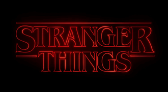

Stranger Things is an American science fiction horror drama television series created by the Duffer Brothers for Netflix. Produced by Monkey Massacre Productions and 21 Laps Entertainment, the first season was released on Netflix on July 15, 2016. The second and third season followed in October 2017 and July 2019 respectively, and the fourth season aired in two parts in May and July 2022. In February 2022, Stranger Things was renewed for a fifth and final season.
Set in the 1980s, the series centers around the residents of the fictional small town of Hawkins, Indiana, as they are plagued by a
hostile alternate dimension known as the Upside Down, after a nearby human experimentation facility opens a gateway between it and
the normal world. The ensemble cast includes Winona Ryder, David Harbour, Finn Wolfhard, Millie Bobby Brown, Gaten Matarazzo, Caleb
McLaughlin, Natalia Dyer, Charlie Heaton, Cara Buono, Matthew Modine, Noah Schnapp, Sadie Sink, Joe Keery, Dacre Montgomery, Sean
Astin, Paul Reiser, Maya Hawke, Priah Ferguson and Brett Gelman.
The Duffer Brothers developed Stranger Things as a mix of investigative drama and supernatural elements portrayed with horror and
childlike sensibilities, while infusing references to the pop culture of the 1980s. Several thematic and directorial elements were
inspired by the works of Steven Spielberg, John Carpenter, David Lynch, Stephen King, Wes Craven and H. P. Lovecraft. They also took
inspiration from experiments conducted during the Cold War and conspiracy theories involving secret government programs.
One of Netflix's flagship series, Stranger Things has attracted record viewership on the streaming platform. It has been received
positively for its characterization, atmosphere, acting, soundtrack, directing, writing, and homages to 1980s films. It has received
numerous nominations and awards. An animated spin-off series, developed by Eric Robles and produced by Flying Bark Productions, is in
development.
|  | |
| Created by | The Duffer Brothers |
| Genre | Horror, Mystery |
| Country | United States |
| Budget | $270 million (season 4) |
| Released | July 15, 2016 |
| Number of episodes | 34 |